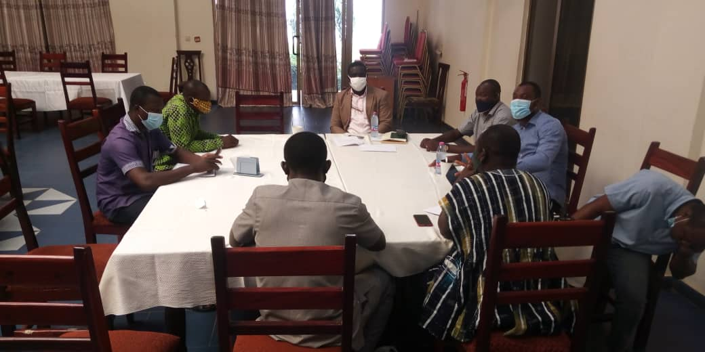

SAFI welcomes partnerships that address a clear question, combine complementary strengths and leave lasting capability with the people and institutions involved.

Universities & Research Institutions
Explore joint studies, comparative methods, co-developed proposals, data partnerships, mentoring and researcher exchanges. We seek clarity on scientific roles, resources, authorship and the use of findings from the outset.
Public Institutions discuss evidence needs, planning questions, research synthesis and policy dialogue. Research should support informed choices while retaining independence in methods, interpretation and publication.
Traditional Institutions help frame locally relevant questions, guide engagement and determine how knowledge is used. Participation should recognise knowledge holders' contributions and provide appropriate ways to share findings and raise concerns.
Civil Society bring implementation experience, rights-based perspectives, specialist skills and connections with the people affected by decisions.
Businesses explore responsible innovation, value-chain research and investment analysis. Financial interests and potential conflicts need to be clear, particularly where research and commercial development intersect.
Funders and philanthropic partners can help develop coherent programmes, strengthen research capability and make evidence accessible to communities and decision-makers. We welcome discussions about programme support, the Savannah Futures Academy and its fellowships, shared technical resources and institutional development.
Tell us about the question you want to address, the place or population involved and the contribution you can make. We will consider mission fit, scientific quality, practical value, resources and fairness before developing an agreed workplan.